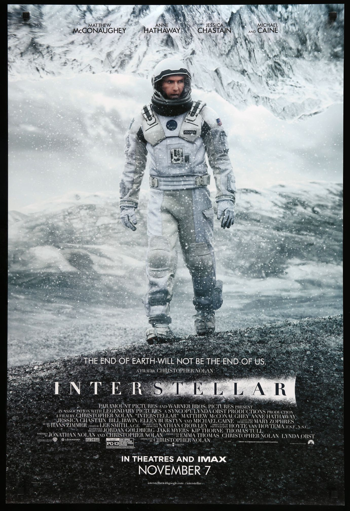

INTERSTELLAR

Reseña breve
Interstellar (2014), dirigida por Christopher Nolan, es una épica de ciencia ficción que combina exploración espacial, emociones humanas y teorías científicas complejas. La historia sigue a Cooper, un ex piloto de la NASA, quien se une a una misión interestelar en busca de un nuevo hogar para la humanidad, ya que la Tierra está al borde del colapso ambiental. La película destaca por su impresionante cinematografía, una banda sonora poderosa de Hans Zimmer y su enfoque en temas como el tiempo, el amor y el sacrificio. A través de agujeros de gusano, planetas desconocidos y paradojas temporales, Interstellar logra mezclar ciencia dura con una narrativa profundamente emotiva, dejando una experiencia visual y reflexiva duradera.
Reseña en forma de lista:
- Título: Interstellar
- Director: Christopher Nolan
- Año de estreno: 2014
- Género: Ciencia ficción, drama
- Protagonistas: Matthew McConaughey, Anne Hathaway, Jessica Chastain
- Sinopsis: Un ex piloto lidera una misión a través del espacio para encontrar un nuevo planeta habitable, mientras su familia lucha por sobrevivir en la Tierra.
- Temas principales: Amor, tiempo, sacrificio, supervivencia humana, física teórica
- Aspectos destacados:
- Efectos visuales espectaculares
- Banda sonora impactante de Hans Zimmer
- Representación científica del agujero negro y la relatividad
- Recepción: Aclamada por la crítica y el público, considerada una de las mejores películas de ciencia ficción del siglo XXI.